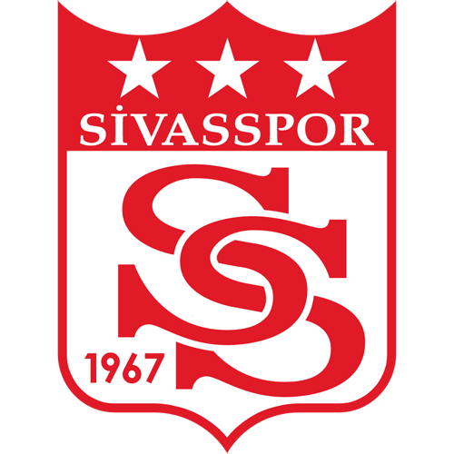
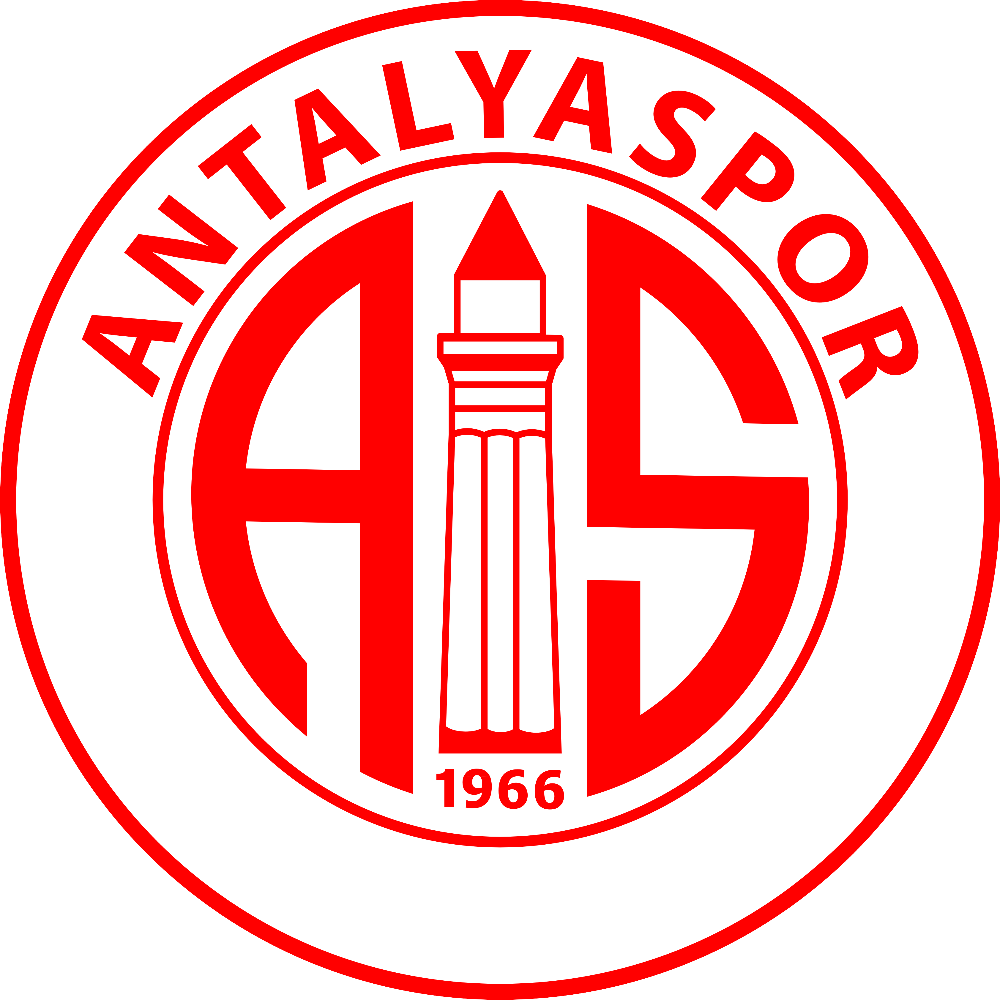
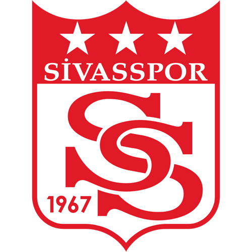
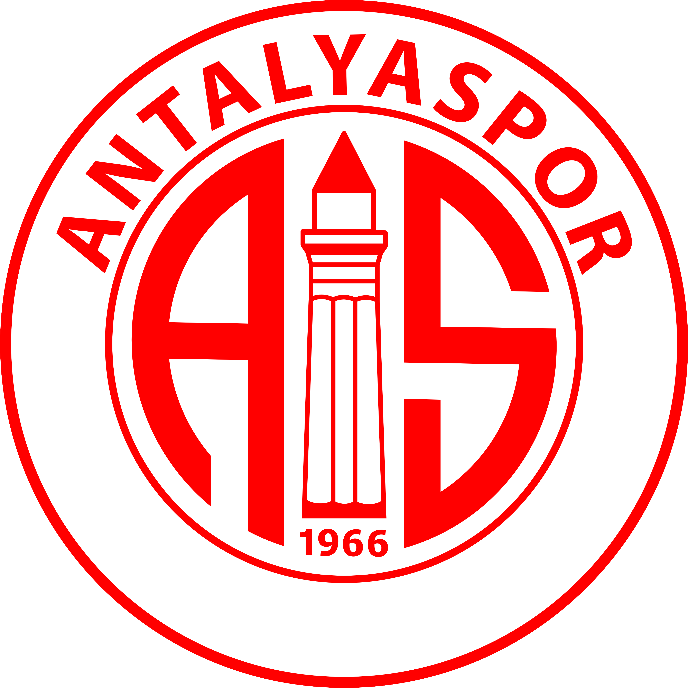
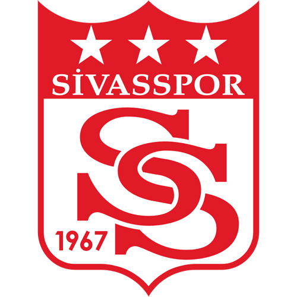
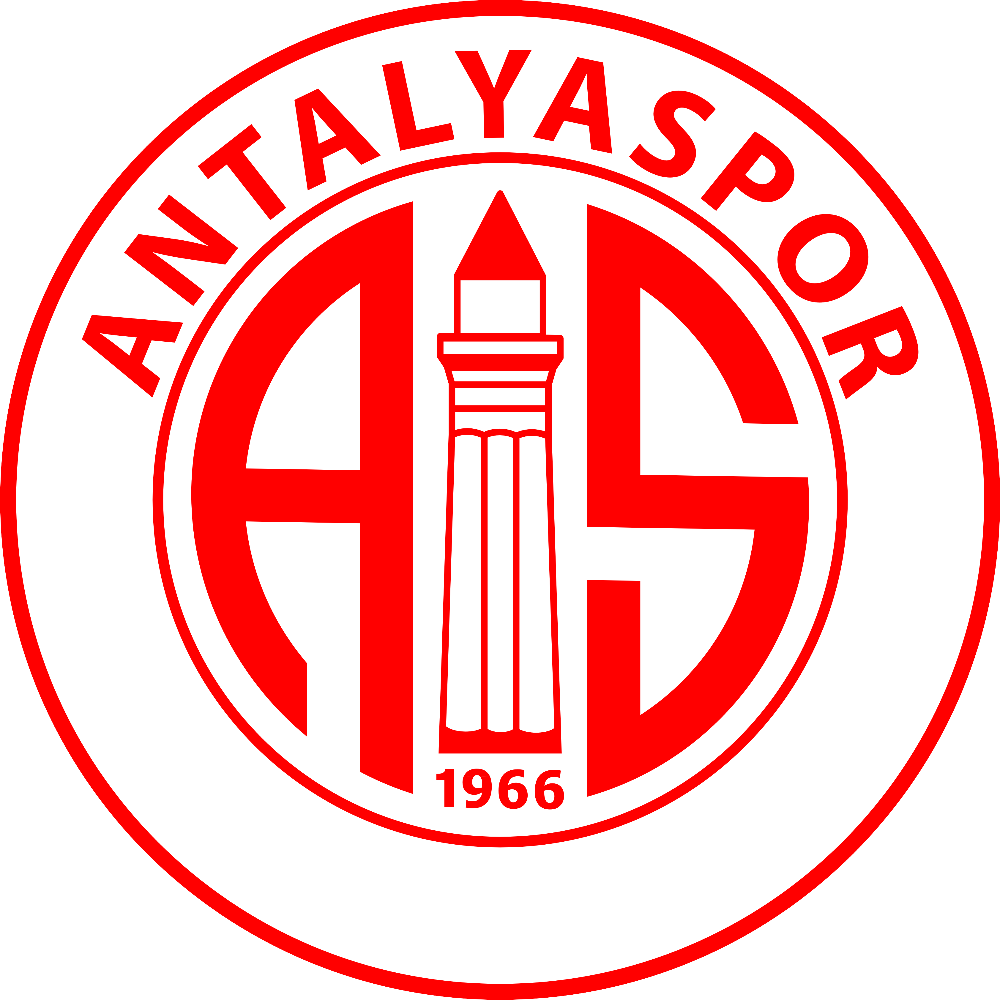

Beşiktaş - Kırklarelispor
Beşiktaş - Kırklarelispor  Beşiktaş - Sivasspor Beşiktaş - Eyüpspor Beşiktaş - Gaziantep FK Beşiktaş - Antalyaspor Beşiktaş - Konyaspor Beşiktaş - Kayseri Beşiktaş - Göztepe
Beşiktaş - Sivasspor Beşiktaş - Eyüpspor Beşiktaş - Gaziantep FK Beşiktaş - Antalyaspor Beşiktaş - Konyaspor Beşiktaş - Kayseri Beşiktaş - Göztepe  Beşiktaş - Galatasaray
Beşiktaş - Galatasaray | Beşiktaş - Kırklarelispor |
Türkiye Kupası | MS 4/2 | 2-0 |
| Beşiktaş - Sivasspor  |
Süper Lig | MS 8/2 | 2-0 |
| Beşiktaş - Eyüpspor |
Süper Lig | MS 21/2 | 3-1 |
| Beşiktaş - Gaziantep FK |
Süper Lig | MS 10/3 | 1-2 |
| Beşiktaş - Antalyaspor  |
Türkiye Kupası | MS 25/2 | 2-1 |
| Beşiktaş - Konyaspor |
Süper Lig | MS 15/3 | 0-1 |
| Beşiktaş - Kayseri |
Süper Lig | MS 1/3 | 2-0 |
| Beşiktaş - Göztepe |
Türkiye Kupası | 3/04 Per, 20:30 | 0-3 |
| Beşiktaş - Galatasaray |
Süper Lig | 29/03 Cmt, 20:30 | 2-1 |